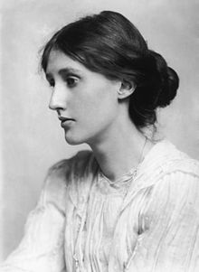

Feodor Dostoevsky
The bibliography of Fyodor Dostoyevsky comprises novels, novellas, short stories, essays and other literary works. Raised by a literate family, Dostoyevsky discovered literature at an early age, beginning when his mother introduced the Bible to him...
Read More...
Books

The Brothers Karamazov
The Brothers Karamazov is a passionate philosophical novel set in 19th-century Russia, that enters deeply into the ethical debates of God, free will, and morality...
Read More...
The Idiot
The title is an ironic reference to the central character of the novel, Prince (Knyaz) Lev Nikolayevich Myshkin, a young man whose goodness, open-hearted simplicity and guilelessness...
Read More...
Crime And Punishment
Dostoevsky conceived the idea of Crime and Punishment in the summer of 1865. At the time the author owed large sums of money to creditors...
Read More...
The White Nights
Like many of Dostoyevsky's stories, "White Nights" is told in first person by a nameless narrator; the narrator is living in Saint Petersburg and suffers from loneliness...
Read More...“I love humanity, but I wonder at myself, because the more I love humanity in general, the less I love man in particular."
The Brothers Karamazov
Biography
Bio
Feodor Dostoevsky
Childhood
Fyodor Dostoevsky, born on 11 November 1821, was the second child of Dr. Mikhail Dostoevsky and Maria Dostoevskaya. He was raised in the family home in the grounds of the Mariinsky Hospital for the Poor, which was in a lower class district on the edges of Moscow.
Early career
Dostoevsky completed his first novel, Poor Folk, in May 1845. His friend Dmitry Grigorovich, with whom he was sharing an apartment at the time, took the manuscript to the poet Nikolay Nekrasov, who in turn showed it to the renowned and influential literary critic Vissarion Belinsky.Belinsky described it as Russia's first "social novel".[ Poor Folk was released on 15 January 1846 in the St Petersburg Collection almanac and became a commercial success.
“The awful thing is that beauty is mysterious as well as terrible. God and the devil are fighting there and the battlefield is the heart of man.”
The Brothers Karamazov
Characters


“Pain and suffering are always inevitable for a large intelligence and a deep heart. The really great men must, I think, have great sadness on earth.”
Crime and Punishment
Reviews

Despite many parallels, Dostoevsky’s thought on love can be viewed as a criticism, avant la letter, of Nietzsche’s claim to having unmasked the Christian idea of neighbour-love ‘for God’s sake’ as an illusion. Yet, in addition to neighbour-love, Dostoevsky also entertains the idea of ‘furthest love’ (a phrase used both by Dostoevsky and by Nietzsche’s Zarathustra), love for the Übermensch of the future.

Hermann Hesse was strongly influenced by Dostoevsky's artistic method, especially by his treatment of the fragmentation of the human personality and his portrayal of the decaying West. Their novels depict the tragedy of intellect ‐ man's problematic exist‐ence taking place amidst the silent loneliness and disharmony characteristic of a diseased city, of modern culture, civilization, philosophy, and industrialization.
The Turkish Nobel Prize laureate Orhan Pamuk often expressed his admiration for Russian literature. In his book Other Colours he writes about Fyodor Dostoevsky and Vladimir Nabokov who made a lasting impression on him during his youth. Despite being a modern writer, he employed the writing methods of the XIX century.

Virginia Woolf
The novels of Dostoevsky are seething whirlpools, gyrating sandstorms, waterspouts which hiss and boil and suck us in. They are composed purely and wholly of the stuff of the soul. Against our wills we are drawn in, whirled round, blinded, suffocated, and at the same time filled with a giddy rapture. Outside of Shakespeare there is no more exciting reading.
"What is hell? I maintain that it is the suffering of being unable to love."
The Brothers Karamazov

Contact Us
Feel free to contact me if you have any questions. I occasionally take freelance design projects and perform design audits and consultations to help improve existing websites
523 12-32-13
Dostoevsky@gmail.com
Tbilisi, Georgia